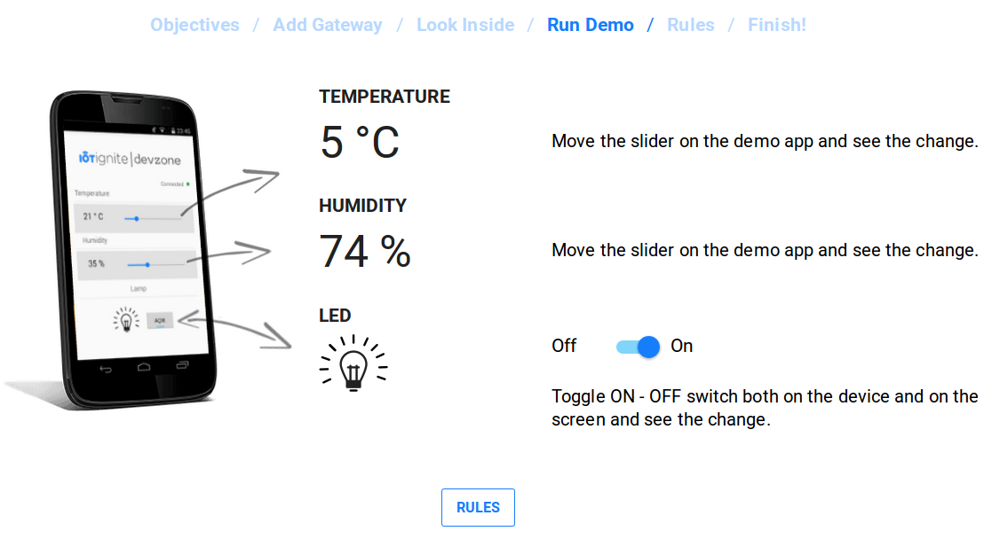
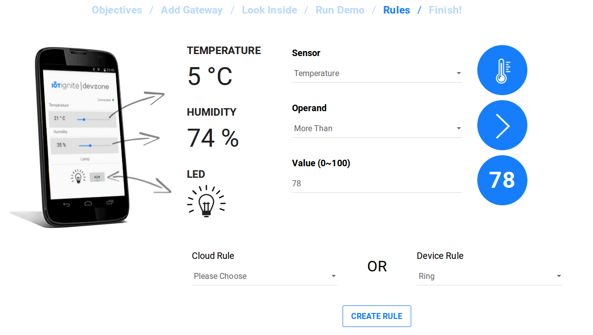

IoT-Ignite Virtual Demo Application
Here you can experience basics of an IoT project with IoT-Ignite value-adds. You can observe the sensor values and define rules at IoT-Ignite Devzone Panel.
Note that, you have to install IoT-Ignite Agent to your Android device and register that device to IoT-Ignite. Please visit demo page for the instructions: devzone.iot-ignite.com/dpanel/demo
In the demo code, you can see how to build a connection with IoT-Ignite Agent, how to create node and sensors and how to send sensor data to IoT-Ignite Cloud. Additionally, you can see how to receive sensor data configurations and actuator data and more.


Github Page: github.com/IoT-Ignite/android-example-IoTIgniteDemoApp
Full Documentation: iot-ignite.github.io/android-example-IoTIgniteDemoApp/
IoT-Ignite Documents: devzone.iot-ignite.com/documents/
IoT-Ignite Device SDK Reference: devzone.iot-ignite.com/device-api/iot-ignite/reference/
For full information about IoT-Ignite, please visit iot-ignite.com.